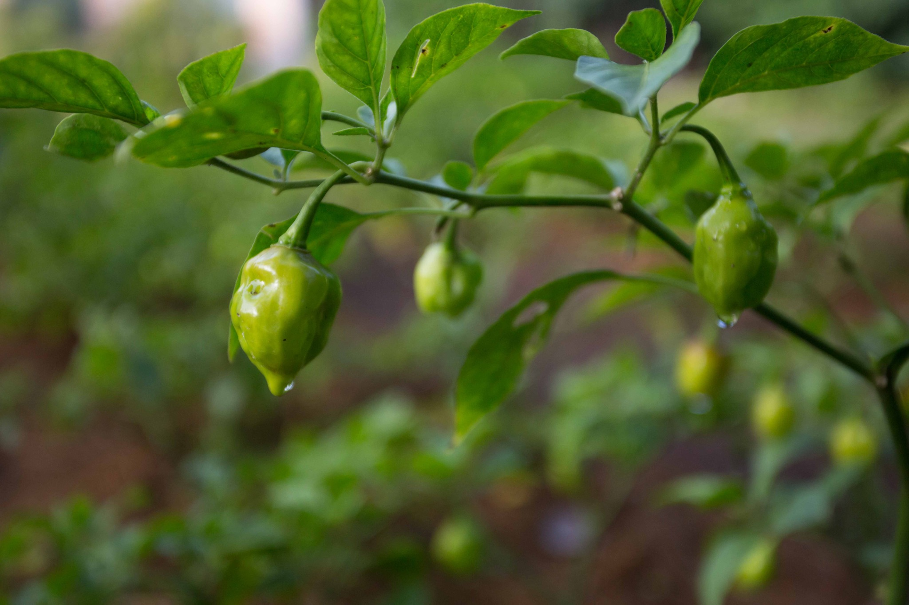

2023
20232023 · Book
Building Pathways to Peace: State-Society Relations and Security Sector Reform
Nadine Ansorg and Sabine Kurtenbach
Cambridge University Press · Cambridge Elements
DOI ↗Books, peer-reviewed research, chapters and contributions to public debate.
Bibliography based on my July 2026 CV, with selected publisher and DOI records checked. Publication status and links will continue to be updated.

2023Nadine Ansorg and Sabine Kurtenbach
Cambridge University Press · Cambridge Elements
DOI ↗ 2021
2021Nadine Ansorg and Eleanor Gordon (eds.)
Routledge
Publisher ↗ 2017
2017Nadine Ansorg and Sabine Kurtenbach (eds.)
Routledge
Publisher ↗ 2013
2013Nadine Ansorg
Springer VS
DOI ↗Ansorg, N.
Frontiers in Political Science
DOI ↗Ansorg, N. and Tlass, Y.
Frontiers in Political Science · Final formatted version forthcoming
Article abstract ↗Ansorg, N., Bakaki, Z. and Di Salvatore, J.
American Journal of Political Science
DOI ↗Ansorg, N. and Kurtenbach, S.
Journal of Global Security Studies 8(2), ogad010
DOI ↗Ansorg, N.
Journal of Contemporary African Studies
Ansorg, N. and Strasheim, J.
Journal of Intervention and Statebuilding
DOI ↗Ansorg, N. and Gordon, E.
Journal of Intervention and Statebuilding 13(1), 2-24
DOI ↗Haaß, F. and Ansorg, N.
Journal of Peace Research 55(6)
DOI ↗Ansorg, N. and Haastrup, T.
Journal of Common Market Studies
DOI ↗Ansorg, N.
Contemporary Security Policy
DOI ↗Ansorg, N., Haass, F. and Strasheim, J.
Journal of Peace Research 53(4), 597-607
Ansorg, N.
International Area Studies Review 17(3), 295-312
DOI ↗Ansorg, N., Haass, F. and Strasheim, J.
Global Governance 19, 19-26
Ansorg, N.
International Journal of Conflict and Violence 5(1), 173-187
Ansorg, N.
International Relations - Students’ Perspective 10/2010, 25-46
Ansorg, N.
Routledge Handbook of Transformations of Political Violence · listed as forthcoming in July 2026 CV
Ansorg, N., Haastrup, T. and Wright, K.
In Confortini and Väyrynen (eds.), Routledge Handbook of Feminist Peace Research
Kurtenbach, S. and Ansorg, N.
Palgrave Encyclopaedia of Peace and Conflict Studies, pp. 1-9
Ansorg, N., Haass, F. and Strasheim, J.
In Ansorg and Kurtenbach (eds.), Institutional Reforms and Peacebuilding, pp. 153-180
Ansorg, N. and Kurtenbach, S.
CAPAZ Documento de trabajo 05/2022
Publication link ↗Ansorg, N. et al.
GIGA Focus Africa
Ansorg, N. and Haastrup, T.
GIGA Focus Africa 03/2016
Ansorg, N. and Schultze, K.
GIGA Focus Afrika 5/2014
Ansorg, N. and Haass, F.
GIGA Focus Afrika 6/2013
Ansorg, N., Haass, F., Mehler, A. and Strasheim, J.
GIGA Focus Afrika 6/2012
Ansorg, N. and Kurtenbach, S.
LSE USAPP blog
Publication link ↗Ansorg, N. and Strasheim, J.
PeaceLab
Publication link ↗Ansorg, N.
SAGE Research Methods Cases
Publication link ↗Ansorg, N.
German Federal Agency for Civic Education
Publication link ↗Ansorg, N.
PeaceLab
Publication link ↗Ansorg, N.
The Conversation
Publication link ↗Ansorg, N.
German Federal Agency for Civic Education
Publication link ↗Ansorg, N. and Haass, F.
Providing for Peacekeeping
Publication link ↗Ansorg, N. and Haastrup, T.
The Conversation
Publication link ↗Ansorg, N.
Audio contribution
Ansorg, N.
Deutsche Welle
Publication link ↗Ansorg, N.
Deutsche Welle
Publication link ↗Ansorg, N.
Book review · South African Journal of International Affairs
DOI ↗